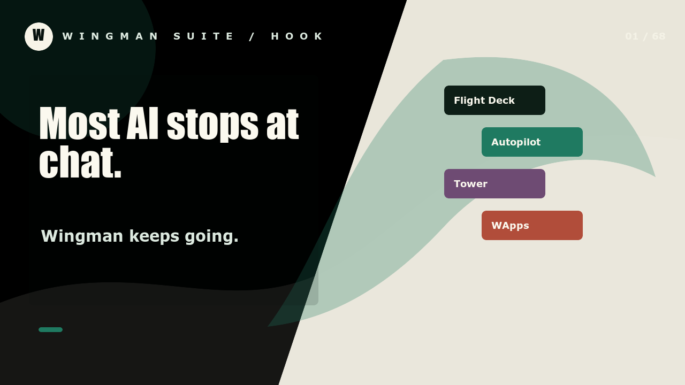

Agents can run on an always-on machine, keep sessions, host apps, and continue beyond one chat window.
Autopilot-first agent operations
Most AI stops
at chat.
Wingman keeps
going.
Wingman runs AI agents
and keeps humans in the loop
across projects, apps,
workflows, files, and teams.

The simple version
A shared work system
for people and agents.
Agents get working sessions. People get one place to review, redirect, decide, and coordinate.
What each bit does
The pieces are separate on purpose.
01
Autopilot
Runs agent sessions, pipelines, triggers, managed apps, subdomains, files, and signed APIs.
02 Flight DeckGives humans chat, tasks, docs, approvals, comments, artifacts, and project visibility.
03 TowerOwns shared backend state, Nostr auth, Postgres, storage, graph memory, and API contracts.
04 SkillsTurn repeated agent work into durable procedures with clear tools, rules, and validation.
How it works
Work moves from intent to action to review.
1. AskA person describes a goal in chat, a task, a flow, or a pipeline run.
2. DispatchAutopilot starts the right agent or workflow with repo, task, and context.
3. ExecuteThe agent works in files, apps, APIs, terminals, and documents.
4. RecordTower keeps the shared state, files, comments, task updates, and graph memory.
5. ReviewFlight Deck shows humans what changed and what needs a decision.
Why it matters
It is for real work with multiple agents and multiple people.
People can see the work in tasks, docs, comments, artifacts, files, approvals, and chats.
Work can be assigned, reviewed, redirected, and coordinated across scopes, projects, and people.
First piece